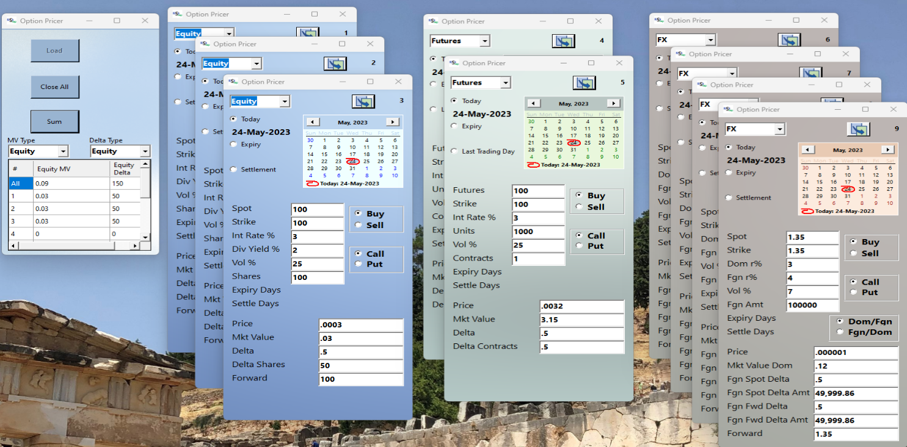

For the HVaR program please contact us directly. The following downloads are general tools for understanding risk characteristics of various market products.
The Black-Scholes generalized formula can be used to price european options on stocks without dividends (the original model by Black and Scholes, 1973), options on stocks with a continuous dividend yield (Merton, 1973), options on futures (Black 1976) and options on currencies (Garman and Kohlhagen - 1983). There are slight differences between the models, and this download presents the basic three (equity, future and foreign exchange), on one form . 
• Equity Options
The expected forward for an equity option in the generalized Black-Sholes is f = s * exp((r-q)t) that is, the alternative to selling the equity now, investing the proceeds at r but foregoing the dividends, q, until the forward date t. However, the forward price of an equity where there is no active market for the forward will be influenced by other factors such as unpredictability and timing of dividends, supply and demand as determined by the repo market (ie. borrowing of shares for collateral or short selling). Where there is a reasonably active options market, the forward can be determined through put-call parity. From the forward, the dividend yield can be backed out. The forward can also be derived through the futures market if such exists for the equity.
• Options on Futures
In the futures market, the futures price is the forward, so the forward is generally unequivocal. Therefore there is no need for a carrying charge (such as the dividend yield for equities). The settlement date is taken to be the last trading day of the contract underlying the option contract, and impacts the discounting of the expected price.
• Foreign Exchange Options
The over-the-counter market for foreign exchange is somewhat complicated by the quoting conventions. For example, the Euro, Pound Sterling and Australian dollar are quoted conventionally as the number of U.S. dollars required to purchase one unit of foreign currency. Most other currencies are quoted as the number of foreign currency needed to buy one U.S. dollar, e.g. the Canadian Dollar, the Japanese Yen and Chinese Yuan. In the option pricer, if a price is on the EURUSD pair, then the Numerator Currency is USD, or the domestic currency. In the north american trading capital markets USD is the nominal domestic currency, with reporting in the actual domestic currency.
• Volatility
Volatility normally is derived from market quotes (implied volatility), and in cases where liquidity is reduced or lacking, can be derived from proxies, including historical standard deviation. Market volatility usually has curvature such that an adjustment is needed for time to expiry, as well as the strike/delta of an option. As an option becomes less in the money or more in the money, the hedging characteristics change, and a premium is charged for the increased risk. In addition, in some markets, puts are preferred over calls and vice versa. Therefore, the volatility for a one month option of a particular strike may not be the same for the same option but at a different strike or delta.
• Delta
The most immediate risk to the price of an option is the market price of the underlying. The initial hedge, for writers of options, is the completion of a delta hedge. The delta provides the number of units of the underlying required. When the option is at-the-money, the strike of that option is at the current market price and the delta of the option is 0.50 or 50 delta. The option has a 50/50 chance of moving in or out-of-the money. That is, the option's value changes as if 1/2 of the notional was at risk. An option that is very deep in-the-money has a delta of 1 and behaves the same as the underlying with very little impact from the implied volatility. An option with a very low delta has almost no value. The forward delta is important to foreign exchange options since the forward price (expected spot at expiry) is derived from interest rates, which at times can change more rapidly than the spot price. A writer of foreign exchange options will hedge the forward risk through the forward market. The forward delta, indicates the hedge amount needed.
For downloads click on the the link below.
Option Pricer Download StockManagement test TestHelloWorld Test3